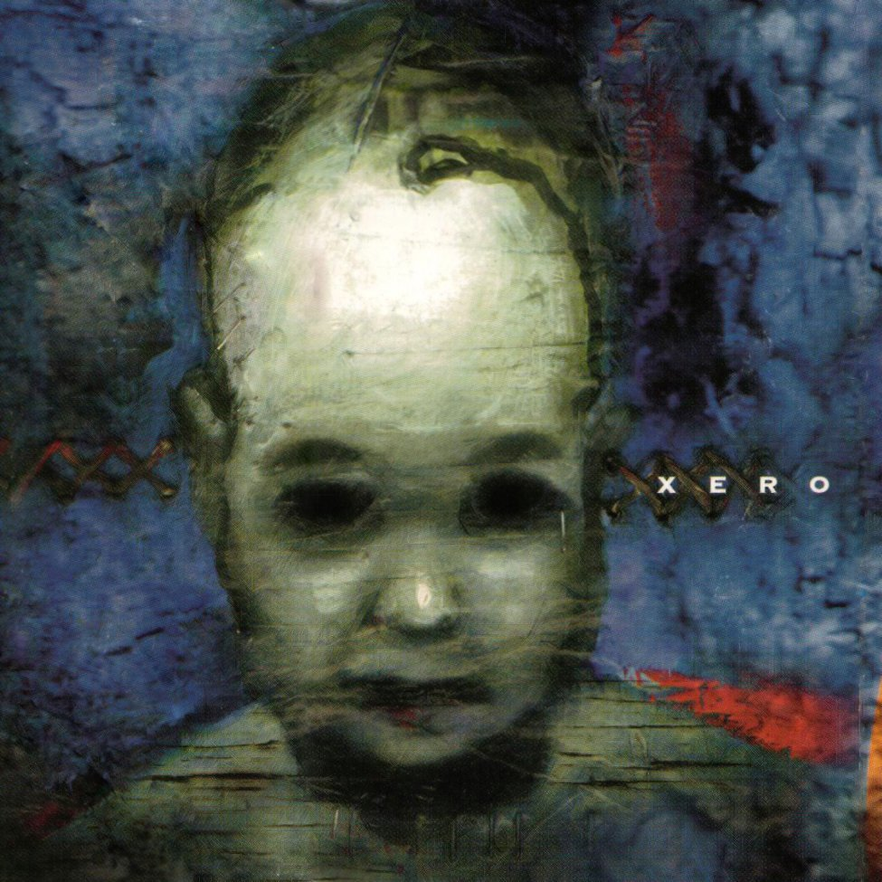
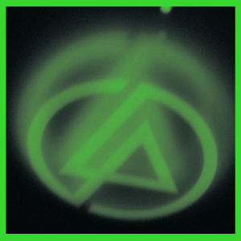
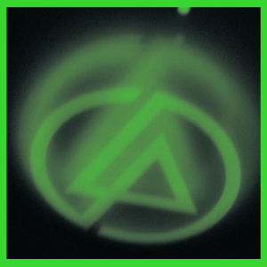
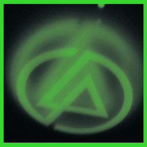

About this site
This website covers Linkin Park’s history: how they formed, their breakthrough with Hybrid Theory, how their sound changed over time, and their legacy.
Quick timeline
- 1996–1999: Early formation and building their style.
- 2000: Breakthrough with Hybrid Theory.
- 2003–2017: Multiple eras and experimentation across albums.
- 2017–present: Legacy and continued influence.
Album Photo Gallery



 


